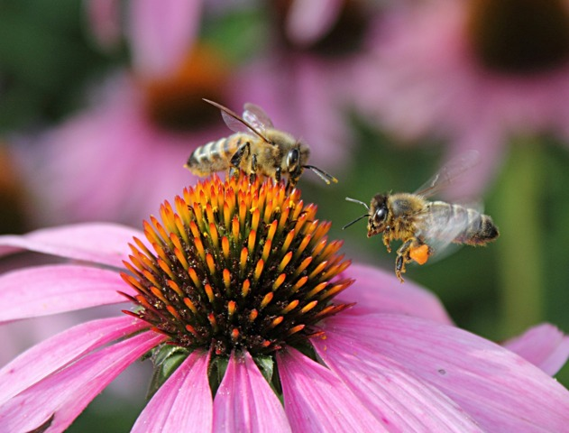

Étape 2
L’insecte se pose sur la plante
Dès que l’insecte est attiré par une fleur, il s’y installe et s’y nourrit. Il y aura alors du pollen qui va se mettre sur celui-ci et il va ensuite le déplacer vers la prochaine fleur qu’il visitera. Dans le cas où ces deux fleurs sont de la même espèce, la pollinisation se produit et on pourra ainsi espérer que les fruits et les légumes se développent dans notre culture.
